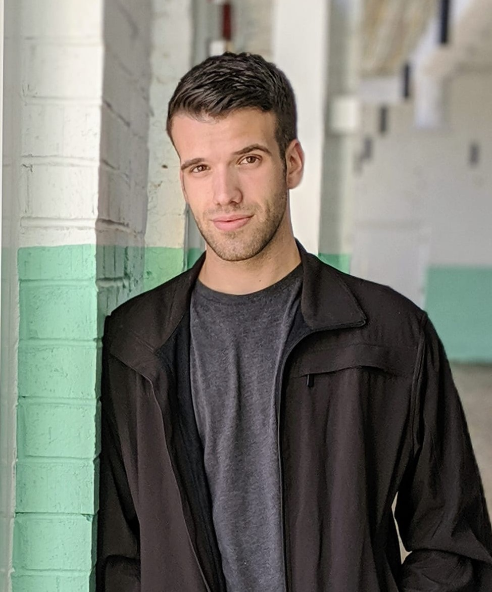
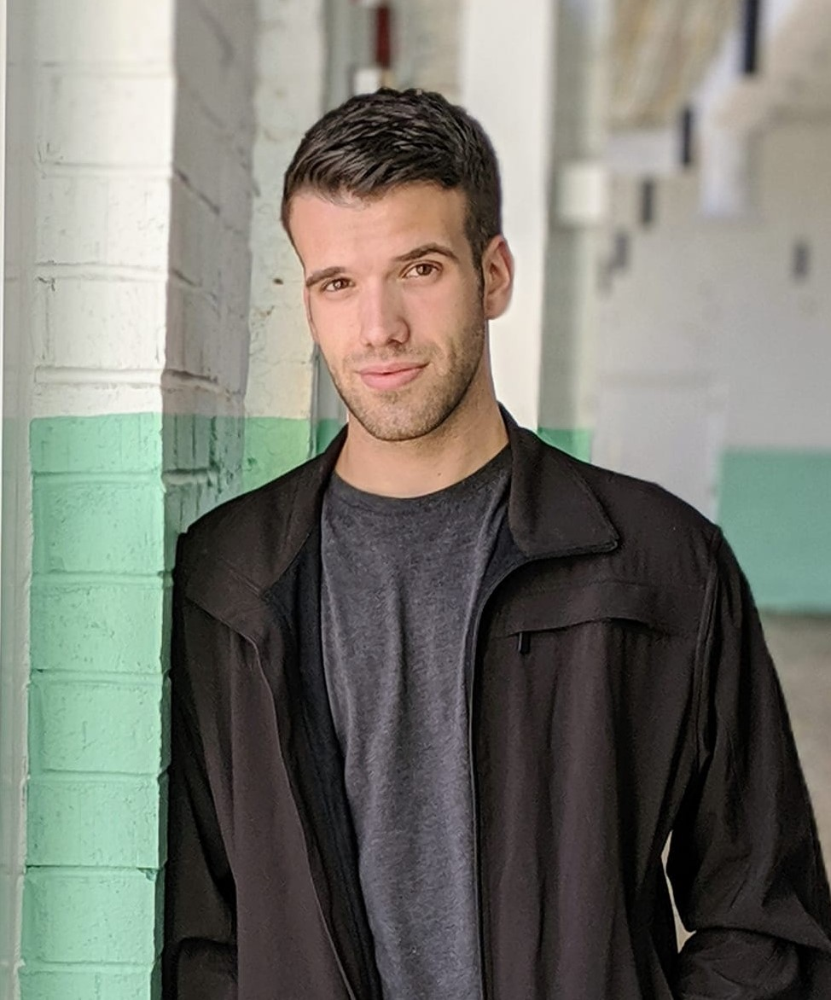

Danny Cannon was born in Louisville, Kentucky on August 18, 1995. His mother, Dannie, was a third grade teacher for Jefferson County and his father, Bob, was a business administrator for Rohm & Haas Company. He has four older siblings, but the age gap between Danny & his next older sibling is 13 years. While in high school, Danny worked at Walmart as a cashier and customer service manager for several years. He graduated from Louisville Male High School in 2013.
Following high school, Danny attended the University of Kentucky. He changed his major multiple times (beginning with Biology Pre-Med) and finally settled on Public Health. During that time, he worked a variety of jobs such as:
Danny graduated with a Bachelor of Public Health in 2016 & decided to enlist in the Army following graduation. He served as a medic in multiple roles, such as medic trainer in a clinic and supervisor in a field hospital. He left the Army in 2019 & moved to Charlotte, North Carolina, working as a landscaper and collections agent.
In February 2020, Danny decided to return to Louisville & enroll in the Accelerated Nursing Program at Bellarmine University. After starting the program, he met his eventual-husband, Nick. Nick began the same program in 2021.
Danny graduated from Bellarmine with a BSN in 2021 & began working as a registered nurse in the Emergency Department at Norton Healthcare. After working two years, he became fatigued of bedside care & began to explore other career options. Having always been drawn to problem solving and coding, he began Bellarmine's Accelerated Software & Data Engineering program in May 2023.
Nick & Danny were married in March 2023, but will be having a ceremony to celebrate with friends & family in September 2023. They have 3 fur babies - two pups and one cat. Nick is a pediatric nurse & has been supportive through Danny's endeavors. They both look forward to the future.
Special thanks to: